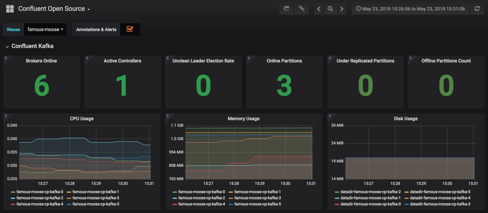
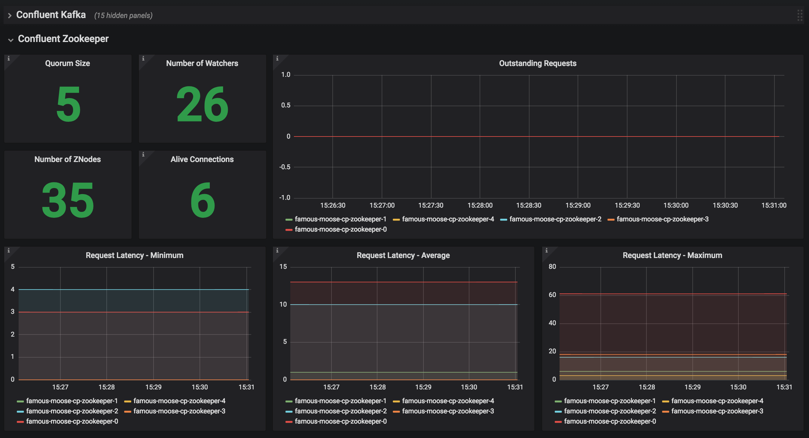

You can use the Helm charts to deploy services on Kubernetes for development, test, and proof of concept environments.
| Open Source Helm charts are not supported by Confluent. |
If you want to use Confluent Platform on Kubernetes in a test or production environment, follow these instructions to install Confluent Operator.
The Confluent Platform Helm Charts enable you to deploy Confluent Platform components on Kubernetes for development, test, and proof of concept environments.
Installation
helm repo add confluentinc https://confluentinc.github.io/cp-helm-charts/ (1)
helm repo update (2)
helm install confluentinc/cp-helm-charts --name my-confluent --version 0.6.0 (3)| 1 | Add confluentinc helm charts repo |
| 2 | Update repo information |
| 3 | Install Confluent Platform with release name «my-confluent» and version 0.6.0 |
Contributing
We welcome any contributions:
| It’s not officially supported repo, hence support is on "best effort" basis. |
-
Report all enhancements, bugs, and tasks as GitHub issues
-
Provide fixes or enhancements by opening pull requests in GitHub
Documentation
Helm is an open-source packaging tool that helps you install applications and services on Kubernetes. Helm uses a packaging format called charts. Charts are a collection of YAML templates that describe a related set of Kubernetes resources.
This repository provides Helm charts for the following Confluent Platform services:
-
ZooKeeper
-
Kafka brokers
-
Kafka Connect
-
Confluent Schema Registry
-
Confluent REST Proxy
-
ksqlDB
-
Confluent Control Center
Environment Preparation
You must have a Kubernetes cluster that has Helm configured.
Tested Software
These Helm charts have been tested with the following software versions:
-
Kubernetes 1.9.2+
-
Helm 2.8.2+
This guide assumes that you’re Helm 2 (tested with Helm 2.16).
You can follow up on Helm 3 issues in https://github.com/confluentinc/cp-helm-charts/issues/480
|
For local Kubernetes installation with Minikube, see Install Minikube and Drivers.
Install Helm on Kubernetes
Follow the directions to install and deploy Helm to the Kubernetes cluster.
View a list of all deployed releases in the local installation.
helm init
helm repo update
helm list
For Helm versions prior to 2.9.1, you may see "connect: connection refused", and will need to fix up the deployment before proceeding.
|
kubectl delete --namespace kube-system svc tiller-deploy
kubectl delete --namespace kube-system deploy tiller-deploy
kubectl create serviceaccount --namespace kube-system tiller
kubectl create clusterrolebinding tiller-cluster-rule --clusterrole=cluster-admin --serviceaccount=kube-system:tiller
kubectl patch deploy --namespace kube-system tiller-deploy -p '{"spec":{"template":{"spec":{"serviceAccount":"tiller"}}}}'
helm init --service-account tiller --upgradePersistence
The ZooKeeper and Kafka cluster deployed with StatefulSets that have a volumeClaimTemplate which provides the persistent volume for each replica.
You can define the size of the volumes by changing dataDirSize and dataLogDirSize under cp-zookeeper and size under cp-kafka in values.yaml.
You also could use the cloud provider’s volumes by specifying StorageClass. For example, if you are on AWS your storage class will look like this:
apiVersion: storage.k8s.io/v1beta1
kind: StorageClass
metadata:
name: ssd
provisioner: kubernetes.io/aws-ebs
parameters:
type: gp2| To adapt this example to your needs, read the Kubernetes StorageClass documentation. |
The StorageClass that was created can be specified in dataLogDirStorageClass and dataDirStorageClass under cp-zookeeper and in storageClass+ under cp-kafka in values.yaml.
To deploy non-persistent Kafka and ZooKeeper clusters, you must change the value of persistence.enabled under cp-kafka and cp-zookeeper in values.yaml
These type of clusters are suitable for strictly development and testing purposes.
The StatefulSets+ are going to use emptyDir volumes, this means that its content strictly related to the pod life cycle and is deleted when the pod goes down.
|
Install Confluent Platform Charts
Clone the Confluent Helm Chart repo
> helm repo add confluentinc https://confluentinc.github.io/cp-helm-charts/
"confluentinc" has been added to your repositories
> helm repo update
Hang tight while we grab the latest from your chart repositories...
...Skip local chart repository
...Successfully got an update from the "confluentinc" chart repository
...Successfully got an update from the "stable" chart repository
Update Complete. ⎈ Happy Helming!⎈Install a 3 node Zookeeper ensemble, a Kafka cluster of 3 brokers, 1 Confluent Schema Registry instance, 1 REST Proxy instance, and 1 Kafka Connect worker, 1 ksqlDB server in your Kubernetes environment.
Naming the chart --name my-confluent-oss is optional, but we assume this is the name in the remainder of the documentation.
Otherwise, helm will generate release name.
|
helm install confluentinc/cp-helm-charts --name my-confluent-ossIf you want to install without the Confluent Schema Registry instance, the REST Proxy instance, and the Kafka Connect worker:
helm install --set cp-schema-registry.enabled=false,cp-kafka-rest.enabled=false,cp-kafka-connect.enabled=false confluentinc/cp-helm-chartsView the installed Helm releases:
helm list
NAME REVISION UPDATED STATUS CHART NAMESPACE
my-confluent-oss 1 Tue Jun 12 16:56:39 2018 DEPLOYED cp-helm-charts-0.1.0 defaultVerify Installation
Using Helm
| This step is optional |
helm test my-confluent-ossVerify Kafka cluster
| This step is optional - to verify that Kafka is working as expected, connect to one of the Kafka pods and produce some messages to a Kafka topic. |
Running state.kubectl get podscp-kafka-broker in a Kafka broker pod to produce messages to a Kafka topic.If you specified a different release name, substitute my-confluent-oss with whatever you named your release.
kubectl exec -c cp-kafka-broker -it my-confluent-oss-cp-kafka-0 -- /bin/bash /usr/bin/kafka-console-producer --broker-list localhost:9092 --topic testWait for a > prompt, and enter some text.
m1 m2
Press Ctrl+C to close the producer session.
-
Consume the messages from the same Kafka topic as above.
kubectl exec -c cp-kafka-broker -it my-confluent-oss-cp-kafka-0 -- /bin/bash /usr/bin/kafka-console-consumer --bootstrap-server localhost:9092 --topic test --from-beginning
You should see the messages which were published from the console producer. Press Ctrl+C to stop consuming.
Manual Test
Zookeepers
git clone https://github.com/confluentinc/cp-helm-charts.git (1) kubectl apply -f cp-helm-charts/examples/zookeeper-client.yaml (2) ... kubectl exec -it zookeeper-client -- /bin/bash zookeeper-shell <zookeeper service>:<port> ls /brokers/ids (3) kubectl exec -it zookeeper-client -- /bin/bash zookeeper-shell <zookeeper service>:<port> get /brokers/ids/0 kubectl exec -it zookeeper-client -- /bin/bash zookeeper-shell <zookeeper service>:<port> ls /brokers/topics (4)
| 1 | Clone Helm Chars git repository |
| 2 | Deploy a client pod. |
| 3 | Connect to the client pod and use the zookeeper-shell command to explore brokers… |
| 4 | topics, etc. |
Kafka
kubectl apply -f cp-helm-charts/examples/kafka-client.yaml (1)
kubectl exec -it kafka-client -- /bin/bash (2)| 1 | Deploy a Kafka client pod. |
| 2 | Log into the Pod |
## Setup
export RELEASE_NAME=<release name>
export ZOOKEEPERS=${RELEASE_NAME}-cp-zookeeper:2181
export KAFKAS=${RELEASE_NAME}-cp-kafka-headless:9092
## Create Topic
kafka-topics --zookeeper $ZOOKEEPERS --create --topic test-rep-one --partitions 6 --replication-factor 1
## Producer
kafka-run-class org.apache.kafka.tools.ProducerPerformance --print-metrics --topic test-rep-one --num-records 6000000 --throughput 100000 --record-size 100 --producer-props bootstrap.servers=$KAFKAS buffer.memory=67108864 batch.size=8196
## Consumer
kafka-consumer-perf-test --broker-list $KAFKAS --messages 6000000 --threads 1 --topic test-rep-one --print-metricsRun A Streams Application
ksqlDB is the streaming SQL engine that enables real-time data processing against Apache Kafka. Now that you have running in your Kubernetes cluster, you may run a ksqlDB example.
Operations
Scaling Zookeeper
| All scaling operations should be done offline with no producer or consumer connection. The number of nodes should always be odd number. |
Install cp-helm-charts with default 3 node ensemble
helm install cp-helm-charts
Scale nodes up to 5, change servers under cp-zookeeper to 5 in values.yaml
helm upgrade <release name> cp-helm-charts
Scale nodes down to 3, change servers under cp-zookeeper to 3 in values.yaml
helm upgrade <release name> cp-helm-charts
Scaling Kafka
| Scaling Kafka brokers without doing Partition Reassignment will cause data loss. You must reassign partitions correctly before scaling the Kafka cluster. |
Install cp-helm-charts with default 3 brokers kafka cluster
helm install cp-helm-charts
Scale kafka brokers up to 5, change brokers+ under cp-kafka to 5 in values.yaml
helm upgrade <release name> cp-helm-charts
Scale kafka brokers down to 3, change brokers under cp-kafka to
3 in values.yaml
helm upgrade <release name> cp-helm-charts
Monitoring
JMX Metrics are enabled by default for all components, Prometheus JMX Exporter is installed as a sidecar container along with all Pods.
-
Install Prometheus and Grafana in same Kubernetes cluster using helm
helm install stable/prometheus helm install stable/grafana -
Add Prometheus as Data Source in Grafana, url should be something like:
http://illmannered-marmot-prometheus-server:9090 -
Import dashboard under grafana-dashboard into Grafana  
Teardown
To remove the pods, list the pods with kubectl get pods and then delete the pods by name.
kubectl get pods
kubectl delete pod <podname>To delete the Helm release, find the Helm release name with helm list and delete it with helm delete.
You may also need to clean up leftover StatefulSets, since helm delete can leave them behind.
Finally, clean up all persisted volume claims (pvc) created by this release.
helm list
helm delete <release name>
kubectl delete statefulset <release name>-cp-kafka <release name>-cp-zookeeper
kubectl delete pvc --selector=release=<release name>Appendix: Create a Local Kubernetes Cluster
There are many deployment options to get set up with a Kubernetes cluster, and this document provides instructions for using Minikube to set up a local Kubernetes cluster. Minikube runs a single-node Kubernetes cluster inside a VM on your laptop.
You may alternatively set up a Kubernetes cluster in the cloud using other providers such as Google Kubernetes Engine (GKE).
Install Minikube and Drivers
Minikube version 0.23.0 or higher is required for docker server https://github.com/moby/moby/pull/31352%5B17.05], which adds support for using ARG in FROM in your Dockerfile.
First follow the basic Minikube installation instructions.
Then install the Minikube drivers.
Minikube uses Docker Machine to manage the Kubernetes VM so it benefits from the driver plugin architecture that Docker Machine uses to provide a consistent way to manage various VM providers.
Minikube embeds VirtualBox and VMware Fusion drivers so there are no additional steps to use them.
However, other drivers require an extra binary to be present in the host PATH.
If you are running on macOS, in particular make sure to install the hyperkit drivers for the native OS X hypervisor:
|
brew install hyperkit
minikube config set driver hyperkit (1)| 1 | Use hyperkit drivel by default |
Start Minikube
The following command increases the memory to 6096 MB and uses the hyperkit driver for the native macOS Hypervisor.
|
-
Start Minikube. The following command increases the memory to 6096 MB and uses the
xhyvedriver for the native macOS Hypervisor.minikube start --kubernetes-version v1.9.4 --cpus 4 --memory 6096 --vm-driver=xhyve --v=8 -
Continue to check status of your local Kubernetes cluster until both minikube and cluster are in Running state
❯ minikube status m01 host: Running kubelet: Running apiserver: Running kubeconfig: Configured -
Work around Minikube issue #1568.
minikube ssh -- sudo ip link set docker0 promisc on -
Set the context.
eval $(minikube docker-env) kubectl config set-context minikube.internal --cluster=minikube --user=minikube Context "minikube.internal" modified. kubectl config use-context minikube.internal Switched to context "minikube.internal".